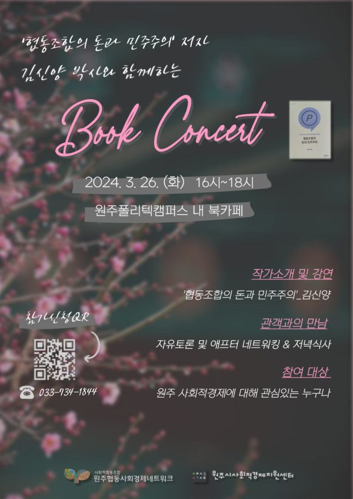

네트워크 정체성위원회 학습모임의 일환으로 개최하는 북콘서트입니다
3회차의 학습모임을 마치고 저자 김신양 박사님과 함께하는 북콘서트를 3월 26일(화) 오후4시에 진행하는데요.
학습모임을 통해 협동조합 7원칙을 기반으로 협동조합의 운영에 대해 논의해볼 수 있는 자리였습니다.
협동조합을 운영하는 조합원도 좋고, 협동조합을 운영하지 않아도 참석하셔도 됩니다.
학습한 내용을 함께 나누는 자리이오니 조합원 분들의 많은 신청과 참석 부탁드립니다!
북콘서트 전 책이 궁금하시다면 사무국으로 연락주세요
(????애프터 네트워킹으로 참여자들과의 가벼운 맥주파티가 예정되어 있습니다~!)